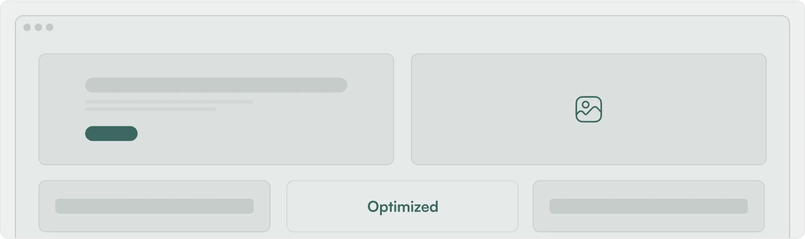

Source the answer.
We map the exact questions buyers ask in ChatGPT, Perplexity, Claude, and Google AI Overviews.
LoudFace rebuilds the pages, proof, and search paths that AI tools pull from when buyers ask who to trust.
The work is not a content calendar. It is a citation path: buyer question, answer page, proof asset, service page, and conversion room.
We map the exact questions buyers ask in ChatGPT, Perplexity, Claude, and Google AI Overviews.
Pages, CMS structure, comparison paths, and proof modules.
Search pages, AEO briefs, campaigns, and refresh loops.
Dense proof rows keep the homepage from becoming a generic portfolio wall. Each row attaches a visible artifact to a buyer question.
Homepage story rebuilt around buyer proof, conversion writing, and a CMS system the team can keep using.

Search and AI visibility moved from a standing start to repeatable answer coverage.

Landing pages, form paths, and testimonials stay close to the claim instead of living in a buried folder.

“Show the buyer the work before the sales call has to carry it.”
Reserved for Daan Smit, Sarig Reichert, or another approved customer quote.
LoudFace turns a stuck page, offer, or search path into a citation-ready proof sprint.